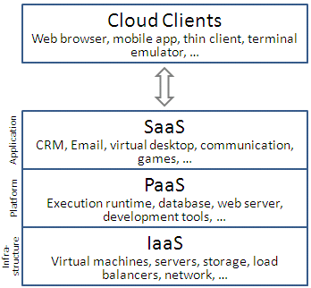
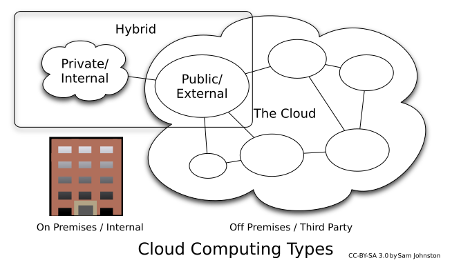
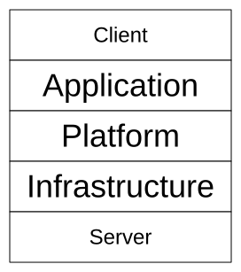

Advanced Web Concepts
Cloud Computing and Online Storage
Watch & Learn
- Cloud Computing Explained (PowerCert, 11 min)
- Cloud Computing For Beginners (Simplilearn, 10 min)
- The Three Ways to Cloud Computing (ExplainingComputers, 10 min)
Video Quiz
In the PowerCert video, what does he say the “cloud” really refers to in practical terms?
In the PowerCert video, which three service models of cloud computing does he explain?
In the Simplilearn video, what advantage of cloud computing is highlighted when comparing it to on-premise infrastructure?
In the Simplilearn video, what deployment models of cloud computing are discussed?
In the ExplainingComputers video, what are the “three ways” to cloud computing that Christopher Barnatt identifies?
In the ExplainingComputers video, which everyday application does Christopher Barnatt use as an example of SaaS?
Theory

What Is “the Cloud”?
When people say their files are “in the cloud,” it sounds mystical — but the reality is far more concrete. Cloud computing simply means using someone else’s computers over the Internet. Instead of storing a photo on your laptop’s hard drive, you send it to a server in a data center — a large, climate-controlled building filled with thousands of machines running around the clock.
Companies like Amazon Web Services, Microsoft Azure, and Google Cloud own millions of servers spread across the globe. When you upload a file to Google Drive or Dropbox, the data travels over the Internet to one of those data centers. You can then access it from any device with a browser — your phone, a school computer, or a friend’s tablet. The “cloud” is just someone else’s computer.

Cloud Services: Storage, Computing, and SaaS
Cloud providers sell their resources in three main layers, often called service models:
- IaaS (Infrastructure as a Service) — you rent raw computing power, storage, and networking. Think of it as leasing an empty building: you get the walls and electricity, but you bring your own furniture. Examples include Amazon EC2 and DigitalOcean.
- PaaS (Platform as a Service) — you get a ready-made environment to build and deploy apps without managing the underlying servers. The provider handles the operating system, databases, and runtime. Examples include Heroku and Google App Engine.
- SaaS (Software as a Service) — you use a finished application through your browser. No installation, no updates to manage. Examples include Gmail, Google Docs, Spotify, and Netflix.
Cloud storage falls under IaaS when you rent raw disk space (like Amazon S3), but services like Google Drive and Dropbox are SaaS — they wrap storage in a friendly interface.

How File Sync Works
When you save a document in a synced folder (like Dropbox or OneDrive), a small program on your device detects the change almost instantly. It calculates a checksum — a short fingerprint of the file — and compares it with the version stored on the server.
If the checksums differ, only the changed parts of the file are uploaded, not the entire thing. This technique is called delta sync, and it saves both time and bandwidth. Once the server has the new version, it pushes the update to every other device linked to the same account. Within seconds, your phone, tablet, and school laptop all show the latest version.
Most sync services also keep version history, so if you accidentally delete a paragraph or overwrite a file, you can roll back to an earlier snapshot. Google Drive, for instance, stores version history for 30 days by default.

Privacy, Security, and the 3-2-1 Backup Rule
Storing files on someone else’s servers raises real privacy and security questions. Who can read your data? The provider’s employees? Law enforcement with a warrant? Hackers who breach the data center? Most reputable services use encryption to scramble your files both during transfer (in transit) and while stored (at rest), but the provider usually holds the encryption keys. That means they could, in theory, decrypt your data.
Some services offer end-to-end encryption, where only you hold the key. This is the safest option, but it also means if you lose your password, nobody — not even the provider — can recover your files.
For truly important data, security experts recommend the 3-2-1 backup rule, introduced by photographer Peter Krogh:
- Keep 3 copies of your data (the original plus two backups).
- Store them on 2 different types of media (for example, your laptop’s internal drive and an external hard drive).
- Keep 1 copy off-site (a cloud backup or a drive stored at a different location).
The logic is simple: if your laptop is stolen, you still have the external drive and the cloud copy. If your house floods, the cloud copy survives. If the cloud provider goes down, your two local copies keep you safe. No single disaster can wipe out all three.
Theory Quiz
What does the phrase “the cloud is just someone else’s computer” actually mean?
Which cloud service model gives you a ready-to-use application in your browser, like Gmail or Google Docs?
Why does delta sync upload only the changed parts of a file instead of the whole thing?
In the 3-2-1 backup rule, what does the “1” stand for?
Why is end-to-end encryption considered the safest option for cloud storage, and what is its trade-off?
Build: “Cloud File Manager” Simulator
Create an HTML/CSS/JS page that simulates a simple cloud file manager using localStorage as your “cloud.”
- Users can “upload” text files by typing a file name and content, then clicking an “Upload” button. The file is saved to localStorage.
- Files are displayed in a list, organized by folders. Users can create new folders and drag files into them.
- Clicking “Share” on a file generates a fake shareable link (like
https://mycloud.fake/share/abc123) and copies it to the clipboard. - Deleting a file moves it to a “Recycle Bin” folder. Files in the bin can be restored or permanently deleted.
- A storage meter shows how much of a fictional 1 MB limit has been used (based on the actual size of data in localStorage).
Requirements:
- An input for the file name, a
<textarea>for content, and an “Upload” button - A sidebar showing folders (at least “My Files” and “Recycle Bin”)
- Each file entry shows its name, size, and date created
- “Share,” “Move to Bin,” and “Restore” buttons on each file
- A progress bar showing storage usage out of 1 MB
- All data persists across page reloads (localStorage)
Solve it in JSFiddle:
Open JSFiddlePaste your HTML into the HTML panel, CSS into the CSS panel, and JS into the JavaScript panel. Click “Run” to see the result!